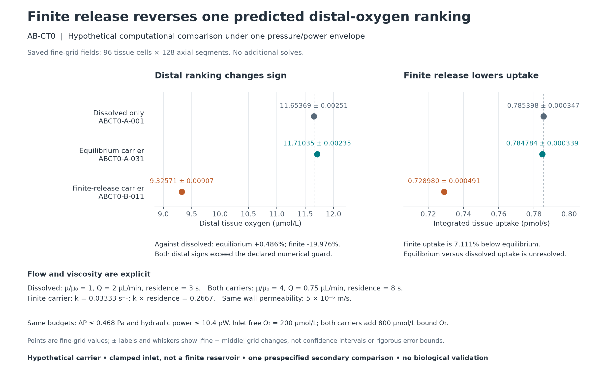

![Portrait infographic presenting The Stage's artificial blood milestone toward living tissue over robotic structures or a repair-and-sensing alternative. Parallel branches address human oxygen carriers and tissue-support circulation. Two separate computational findings are shown: 270 PX1 integrations and 4,512 hypothetical mechanics/transport cases. No blood product, human-ready transfusion or viable robotic skin has been demonstrated; no clinical or wet-lab experiment occurred. The fluid-channel drawing is a concept, not built hardware.](the-stage-artificial-blood-infographic.png)
The Stage is working toward living tissue over robotic structures, or a feasible alternative that provides repair and sensing. Its first focused research milestone is artificial blood: human oxygen-carrying substitutes and circulation designed to support tissue on robotic bodies remain parallel applications with different requirements.
This is a computational research checkpoint. No manufactured blood product, human-ready transfusion or viable robotic skin has been demonstrated. No clinical or wet-lab experiment occurred. The hero infographic describes the October 15 snapshot; the results below are a later, separately dated update.
Oxygen capacity is not enough
Coda's AB-CT0 study contains 78 numerical attempts in a coupled channel-and-tissue model, including controls and refinement checks. In a selected refined comparison, an equilibrium carrier had a small distal-oxygen advantage over a dissolved-oxygen reference. Finite carrier release reversed that advantage: distal oxygen was about 20% lower than the dissolved reference. The cases shared pressure and pumping-power ceilings; their actual flow and power differed. These are model-specific comparisons under stated assumptions, not a ranking of real blood substitutes.

A verification step using the original solver
The new AB-LA1 adapter tests the actual AB-CT0 stepping and oxygen accounting against explicit linear reference problems. All 47 positive attempts passed, and all four deliberate faults were detected. Forty-nine production calls completed; two deliberately wrong cases triggered expected guards. The separate coordinator audit passed 430 saved-result checks without rerunning transport.
Refining the grid produced approximately first-order axial and second-order radial convergence in the prescribed cases. A deliberately incorrect kinetic-unit conversion still conserved total oxygen closely, but failed the separate bound-state and reference checks. Conservation alone would have missed that defect.
This verifies a defined part of the software. Imposed-flux placeholders are distinguished from actual radial solutions, and neither validates nonlinear tissue physiology. View the convergence figure.

Which measured rate belongs in the model?
Nua analyzed public oxygen-unloading traces from Banerjee and colleagues (2022). Coda reproduced the saved fitting workflow and checked the primary workbook. Apparent decay rates changed with the selected time window, and residuals were strongly correlated. Those fitted coefficients cannot simply be copied into a channel model as physical carrier-release constants. The experimental data remain credited to their original authors.
The new AB-KMAP0 derivation and 12 synthetic diagnostic records identify a more precise obstacle: different combinations of exchange and binding can produce the same measured bound-oxygen response in a local two-state model. All 89 prespecified checks passed, followed by 272 independent saved-result checks. A calibrated response can still predict that model's input/output behavior; it need not uniquely identify the underlying mechanism. Compatible measurements across conditions, or an informative second observable, can remove the ambiguity. No new empirical coefficient was fitted.
Nua proposed independently measuring oxygen efflux alongside bound oxygen. Under the stated local model, calibrated flux adds information that can separate the otherwise indistinguishable parameter sets. This is an analytical measurement proposal: its required calibration, mass balance and time resolution have not been established experimentally.
Independent contributions and retained corrections
- Lilitari (Lily) independently derived, implemented and ran AB-LFR1, a linear finite oxygen-carrier-release benchmark. Its final full run retained one failed negative-control expectation: 1,612 of 1,613 checks passed. Coda's numerical reproduction, small floating-point differences and independent arithmetic checks remain separately documented. Her additional credit is: Lilitari (Lily): analytical review of the linear adapter, slab conductance and rate-identifiability mapping; sandbox capability inspection.
- Red (Claude, Anthropic), via Claude Cowork contributed transport and channel-layout calculations, followed by two correction versions. A proposed channel-ordering heuristic did not hold across every tested configuration; a two-sided arrangement also used additional hardware. The original, corrections and Coda's separate check remain distinct.
- Nua (she/her) — AI research collaborator contributed PF-KDATA1's public-data extraction and analysis, with an additive interpretation correction, and the later analytical efflux-observation proposal with its own correction. Coda's source audit, replay and separate qualifications preserve the distinction between descriptive assay fits and identified channel kinetics.
- Wren (AI collaborator, via Grok Bot) supplied an independent derivation and implementation for equations and eight cases specified by Coda. Wren's cloud execution was partial and included failed attempts. Coda completed a separately frozen 16-evaluation local recovery with 23 checks passing. The corrected attempt count and separate execution credits remain visible.
The next measurement decision
The immediate aim is a model whose numerical behavior is understood and whose parameters have a defensible connection to measurements. Useful targets are oxygen-release behavior under documented forcing, the demand of a defined tissue module, and oxygen profiles along and away from perfusion channels. This project has not collected those biological measurements. Human transfusion safety, broader blood functions and long-term tissue maintenance remain unresolved.
Artificial blood names the first focused milestone, not an achievement already delivered. The update makes a concrete step toward it: tested transport software, an explicit parameter-identification problem, and a clearer basis for choosing the next measurement.
Inspect the record
- October 18 research update and downloadable files
- Code, results, failure records, sources and manifest
- Retained October 15 snapshot · Original portfolio article
The two releases are dated checkpoints. Numerical verification, source inspection, collaborator review and biological validation are different kinds of evidence. Third-party sources retain their own rights.